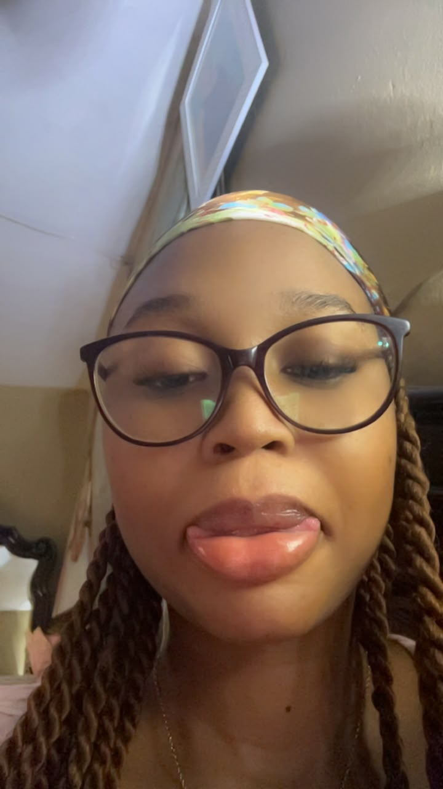
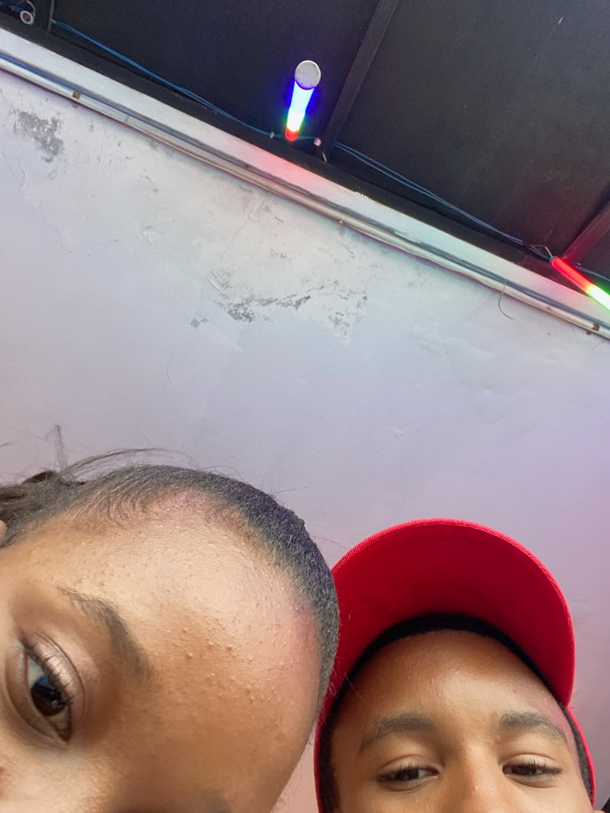
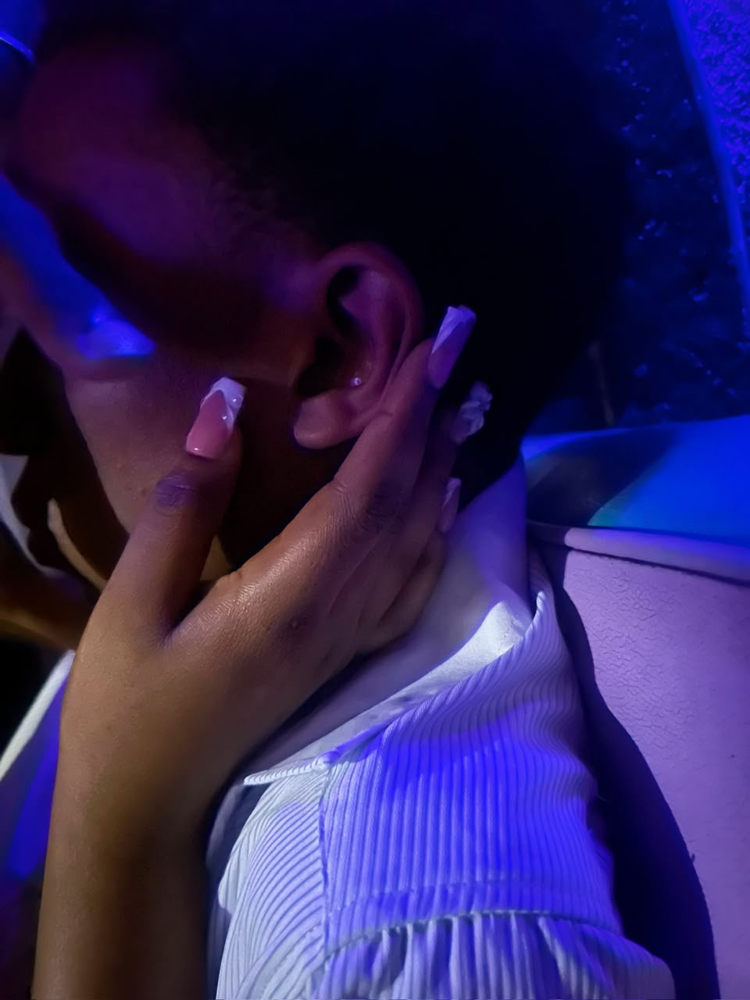
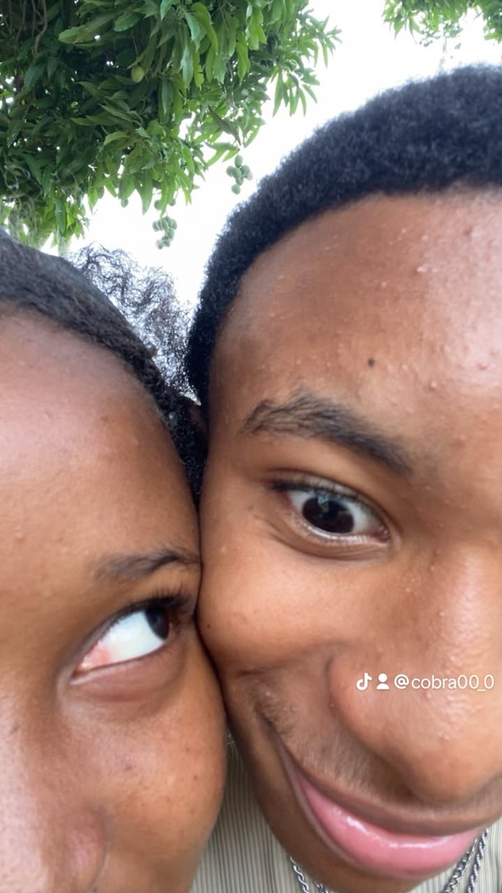
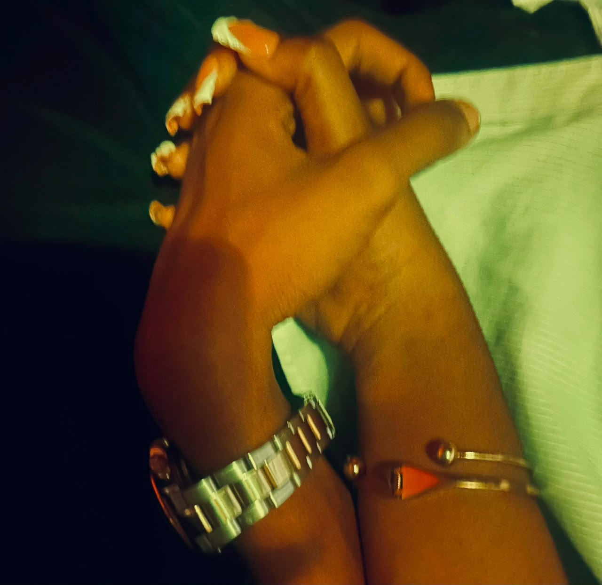

Ton sourire
Il y a des sourires qu’on remarque, et puis il y a le tien. Celui qui rend les moments simples beaucoup plus beaux.

Ton énergie
Ta présence apporte quelque chose de différent. Avec toi, même les moments les plus simples peuvent devenir des souvenirs qu’on garde longtemps.


Ta beauté
Bien sûr que je te trouve belle. Mais ce qui me marque le plus, c’est cette façon que tu as d’être simplement toi.

Nos souvenirs
Des photos, des vidéos, des petits moments. Ce sont peut-être de simples instants, mais ensemble ils racontent une partie de notre histoire.


Nous deux
Pas besoin que tout soit parfait. Ce que j’aime, c’est ce qu’on construit, les moments qu’on partage et tous ceux qui restent encore à vivre.

Une lettre pour toi
Mon amour,
I know things have been a little up and down between us lately, and je sais que tout n’a pas toujours été facile. But even when things get complicated, one thing remains the same: I love you, and I care about you deeply.
Parfois, on ne se comprend pas, parfois on se blesse sans le vouloir, mais malgré tout ça, je ne veux pas qu’on oublie les beaux moments qu’on a partagés et tout ce qu’on représente l’un pour l’autre.
You mean so much to me, plus que je ne peux vraiment l’expliquer avec des mots. And even when we’re not having the best days, mon cœur reste attaché à toi.
Je ne cherche pas une relation parfaite. I just want something real — something where we can talk, understand each other, learn from our mistakes, and keep growing together.
Whatever happens, I want you to know that tu es importante pour moi. I appreciate you, I care about you, and I truly love having you in my life.
Alors même si les choses sont un peu difficiles en ce moment, n’oublie jamais ceci: je t’aime, je tiens à toi, et je ne veux pas que quelques mauvais moments effacent tout le beau qu’il y a entre nous ❤️
You’ll always have a special place in my heart. ❤️